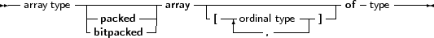

Free Pascal supports arrays as in Turbo Pascal. Multi-dimensional arrays and (bit)packed arrays are also supported, as well as the dynamic arrays of Delphi:
_________________________________________________________________________________________________________Array types

___________________________________________________________________
When the range of the array is included in the array definition, it is called a static array. Trying to access an element with an index that is outside the declared range will generate a run-time error (if range checking is on). The following is an example of a valid array declaration:
Type
RealArray = Array [1..100] of Real; |
Valid indexes for accessing an element of the array are between 1 and 100, where the borders 1 and 100 are included. As in Turbo Pascal, if the array component type is in itself an array, it is possible to combine the two arrays into one multi-dimensional array. The following declaration:
Type
APoints = array[1..100] of Array[1..3] of Real; |
is equivalent to the declaration:
Type
APoints = array[1..100,1..3] of Real; |
The functions High and Low return the high and low bounds of the leftmost index type of the array. In the above case, this would be 100 and 1. You should use them whenever possible, since it improves maintainability of your code. The use of both functions is just as efficient as using constants, because they are evaluated at compile time.
When static array-type variables are assigned to each other, the contents of the whole array is copied. This is also true for multi-dimensional arrays:
program testarray1;
Type TA = Array[0..9,0..9] of Integer; var A,B : TA; I,J : Integer; begin For I:=0 to 9 do For J:=0 to 9 do A[I,J]:=I*J; For I:=0 to 9 do begin For J:=0 to 9 do Write(A[I,J]:2,’ ’); Writeln; end; B:=A; Writeln; For I:=0 to 9 do For J:=0 to 9 do A[9-I,9-J]:=I*J; For I:=0 to 9 do begin For J:=0 to 9 do Write(B[I,J]:2,’ ’); Writeln; end; end. |
The output of this program will be 2 identical matrices.
As of version 1.1, Free Pascal also knows dynamic arrays: In that case the array range is omitted, as in the following example:
Type
TByteArray : Array of Byte; |
When declaring a variable of a dynamic array type, the initial length of the array is zero. The actual length of the array must be set with the standard SetLength function, which will allocate the necessary memory to contain the array elements on the heap. The following example will set the length to 1000:
Var
A : TByteArray; begin SetLength(A,1000); |
After a call to SetLength, valid array indexes are 0 to 999: the array index is always zero-based.
Note that the length of the array is set in elements, not in bytes of allocated memory (although these may be the same). The amount of memory allocated is the size of the array multiplied by the size of 1 element in the array. The memory will be disposed of at the exit of the current procedure or function.
It is also possible to resize the array: in that case, as much of the elements in the array as will fit in the new size, will be kept. The array can be resized to zero, which effectively resets the variable.
At all times, trying to access an element of the array with an index that is not in the current length of the array will generate a run-time error.
Dynamic arrays are reference counted: assignment of one dynamic array-type variable to another will let both variables point to the same array. Contrary to ansistrings, an assignment to an element of one array will be reflected in the other: there is no copy-on-write. Consider the following example:
Var
A,B : TByteArray; begin SetLength(A,10); A[0]:=33; B:=A; A[0]:=31; |
After the second assignment, the first element in B will also contain 31.
It can also be seen from the output of the following example:
program testarray1;
Type TA = Array of array of Integer; var A,B : TA; I,J : Integer; begin Setlength(A,10,10); For I:=0 to 9 do For J:=0 to 9 do A[I,J]:=I*J; For I:=0 to 9 do begin For J:=0 to 9 do Write(A[I,J]:2,’ ’); Writeln; end; B:=A; Writeln; For I:=0 to 9 do For J:=0 to 9 do A[9-I,9-J]:=I*J; For I:=0 to 9 do begin For J:=0 to 9 do Write(B[I,J]:2,’ ’); Writeln; end; end. |
The output of this program will be a matrix of numbers, and then the same matrix, mirrorred.
As remarked earlier, dynamic arrays are reference counted: if in one of the previous examples A goes out of scope and B does not, then the array is not yet disposed of: the reference count of A (and B) is decreased with 1. As soon as the reference count reaches zero the memory, allocated for the contents of the array, is disposed of.
It is also possible to copy and/or resize the array with the standard Copy function, which acts as the copy function for strings:
program testarray3;
Type TA = array of Integer; var A,B : TA; I : Integer; begin Setlength(A,10); For I:=0 to 9 do A[I]:=I; B:=Copy(A,3,6); For I:=0 to 5 do Writeln(B[I]); end. |
The Copy function will copy 6 elements of the array to a new array. Starting at the element at index 3 (i.e. the fourth element) of the array.
The Length function will return the number of elements in the array. The Low function on a dynamic array will always return 0, and the High function will return the value Length-1, i.e., the value of the highest allowed array index.
Arrays can be packed and bitpacked. 2 array types which have the same index type and element type, but which are differently packed are not assignment compatible.
However, it is possible to convert a normal array to a bitpacked array with the pack routine. The reverse operation is possible as well; a bitpacked array can be converted to a normally packed array using the unpack routine, as in the following example:
Var
foo : array [ ’a’..’f’ ] of Boolean = ( false, false, true, false, false, false ); bar : packed array [ 42..47 ] of Boolean; baz : array [ ’0’..’5’ ] of Boolean; begin pack(foo,’a’,bar); unpack(bar,baz,’0’); end. |
More information about the pack and unpack routines can be found in the system unit reference.